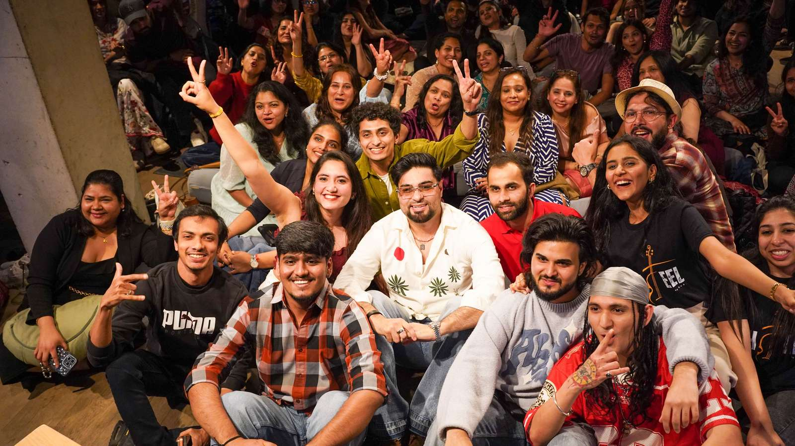
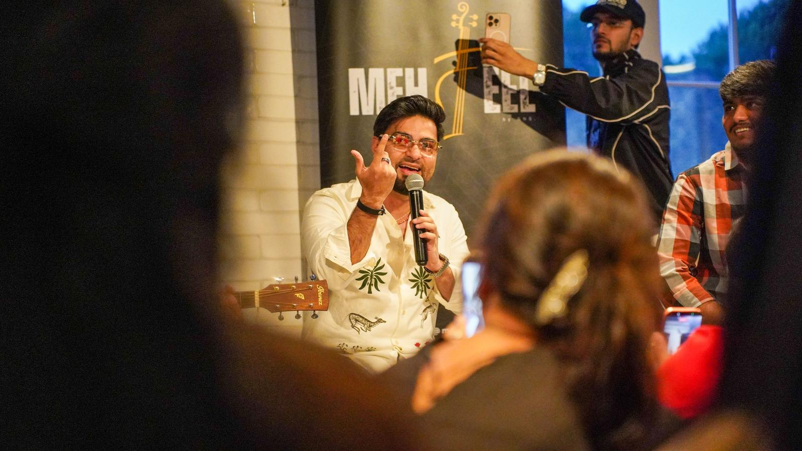
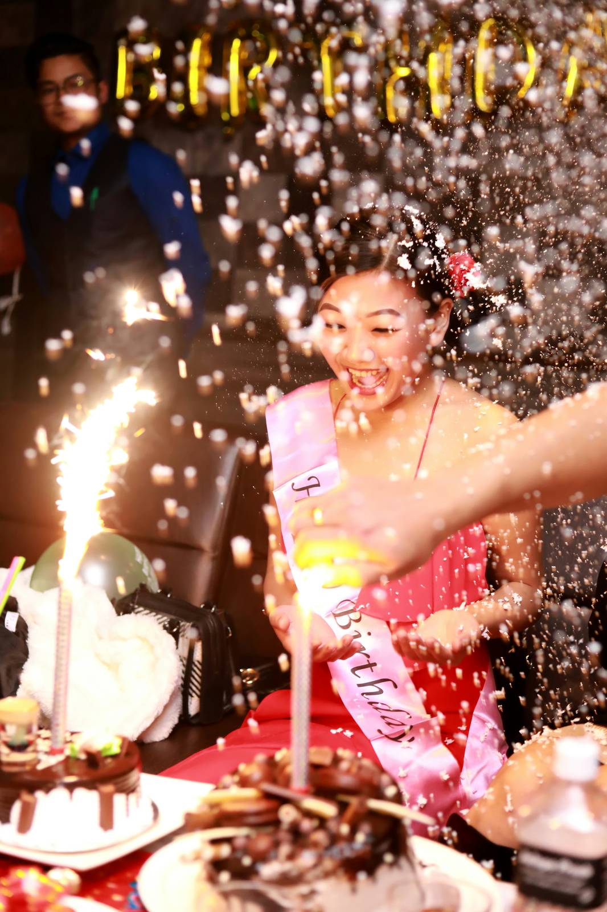
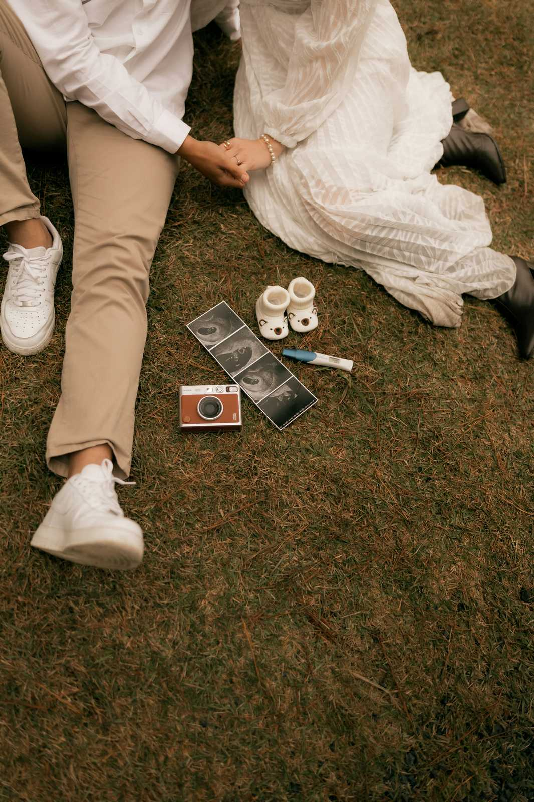
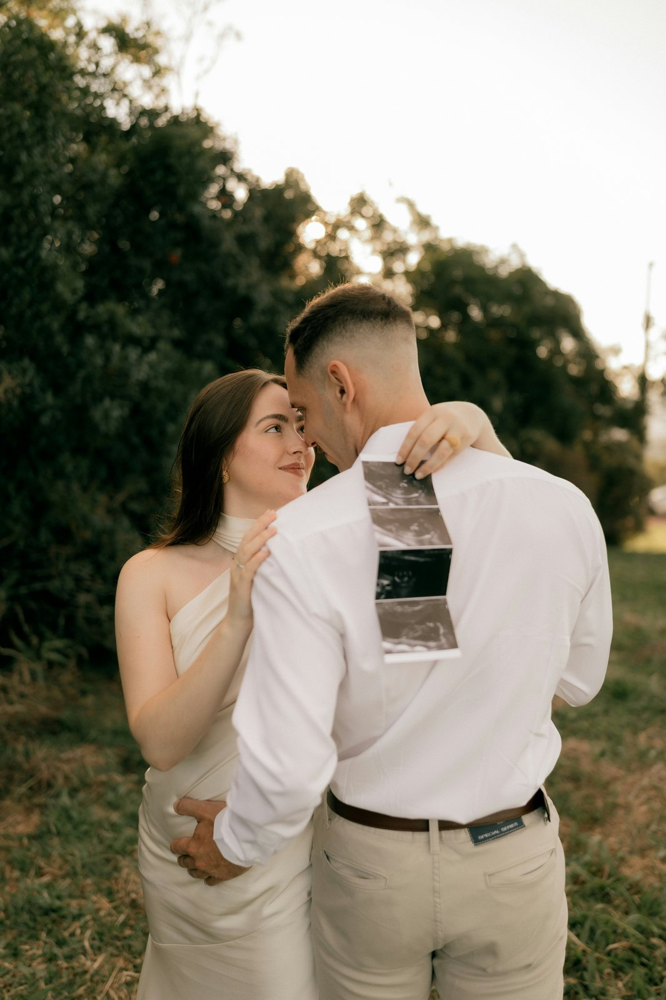
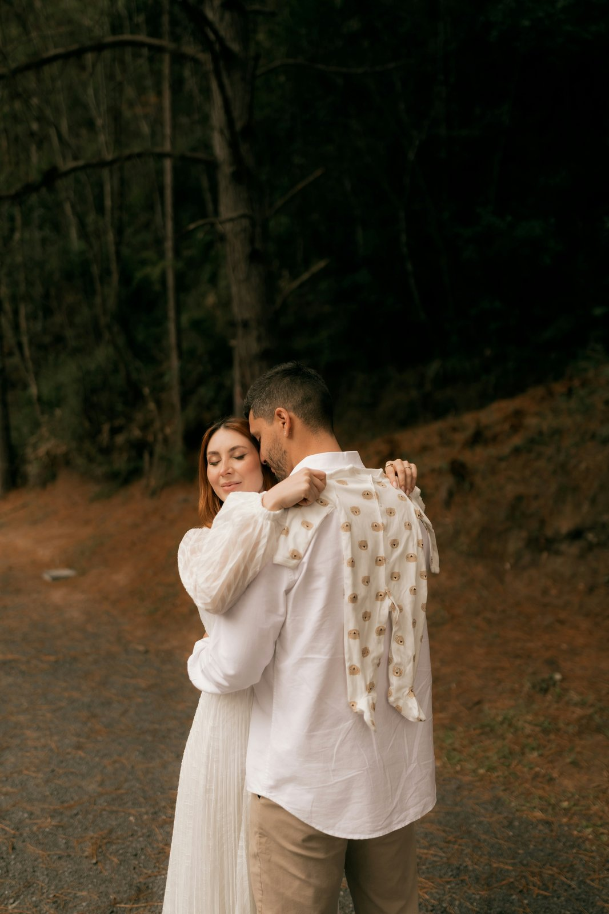

Portfolio
Five disciplines.
Five disciplines.
One way of seeing.
Every category below reflects the same instinct for light, composition, and the moment just before or after the obvious one. Filter by category to see work from a specific kind of shoot.




Event
Birthday

Birthday


